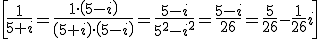

operaciones en forma binómica
Dos complejos son iguales si tienen la misma parte real y parte imaginaria.
Para sumar o restar complejos, sumamos o restamos sus partes reales e imaginarias:
(3 + 2i) + (7 – i) = 10 + i
Para multiplicar complejos, recuerda que i2 = -1:
- (3 + i) · (2- 2i) = 6 + 2i – 6i – 2i2= 8 – 4i
- (1 + 3i)2 = 12+(3i)2+2·1·3i = 1 – 9 + 6i = -8 + 6i
El conjugado de z = a + bi es:

Se puede comprobar que:
Entonces, para dividir complejos, multiplicamos numerador y denominador por el conjugado del denominador (racionalizamos):
Usamos esto para calcular el inverso de un complejo:

Si calculamos las potencias de i:
i1= i i2= -1 i3=i2·i= -i i4=i2·i2=(-1)·(-1)= 1 i5=i4·i= i i6=i4·i2= -1 ......
Entonces, para calcular cualquier potencia de i solo tenenos que calcular el resto de dividir esa potencia entre 4: i147=i3=-i
Ejercicio. Si z=3+2i y w=1-i. Calcula:
a) z-3w=
b) z·w=
c) z2 =
d) 1/w=
e) z/w=
f) i78 =
g) z + i327 =
h) i433 ·i123=
Soluciones:
Obra publicada con Licencia Creative Commons Reconocimiento No comercial Compartir igual 3.0